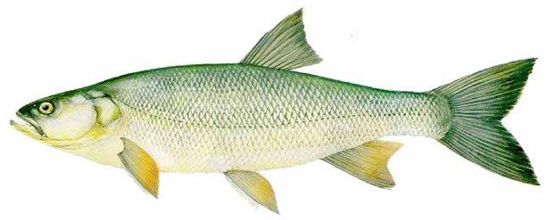
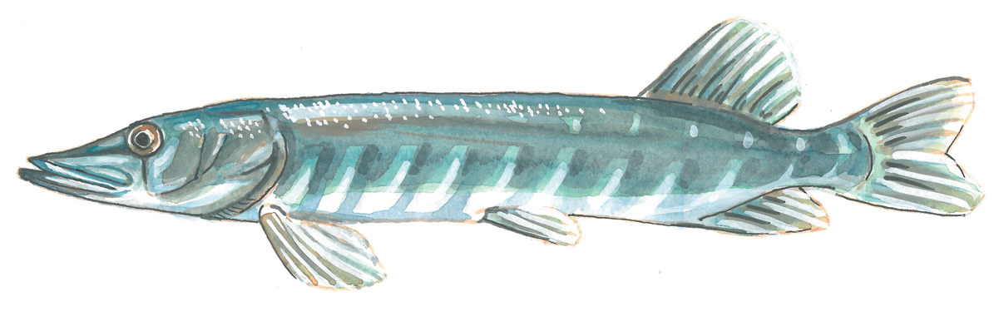
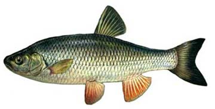
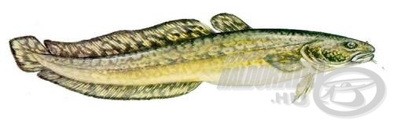

Compó (Tinca tinca) 25cm

Fajlagos tilalmi idő: május 02. – június 15.
Darabszám korlátozással védett (napi max. 3db)
Egyéb nevei: doktorhal avagy cigányhal.
A compó hosszúsága átlagosan 20-30,
legfeljebb 70 centiméter (7,5 kilogramm tömeggel).
Őshonos hal
Jász-keszeg (Leuciscus idus) 20 cm

Fajlagos tilalmi idő: április 15. -május 31.
A hal testhossza 30-50 centiméter, max 85 centiméter
és 4 kilogramm.
Őshonos halfaj
Garda (Pelecus cultratus) 20 cm

Fajlagos tilalmi idő: április 15. -május 31.
Átlagos testhossza 25-35 centiméter,
legfeljebb 60 centiméter.
Őshonos halfajták
Kárász (Carassius carassius) 20cm
Fajlagos tilalmi idő: március 01. – május 31.
Természetes vizeken TILOS megtartásuk!
Testhossza 15-25 centiméter,
nagyon ritkán a 30 centiméter
További magyar elnevezései a karics,
a karesz, az aranykárász, a sárga kárász, és a cigánykárász.
Őshonos halak
Kecsege (Acipenser ruthenus) 50 cm.

Fajlagos tilalmi idő: március 01. – május 31.
Természetes vizeken TILOS megtartásuk!
Testhossza az 1 métert is elérheti.
Testtömege 6-7 kilogramm közötti.
Őshonos halfaj
Márna (Barbus barbus) 40 cm.
Fajlagos tilalmi idő: május 02. – június 15.
Darabszám korlátozással védett (napi max. 3db)
Egyéb nevei: rózsahal, harcsaponty, zsidóhal
Kifejlett példányai testhossza 40-50 centiméter.
Tömege 4-5 kilogramm.
Őshonos halfaj
Paduc (Chondrostoma nasus) 20 cm

Fajlagos tilalmi idő: április 15. -május 31.
Egyéb név: vésettajkú paduc
Átlagos testhossza 25 centiméter,
de 50 centiméteresre is megnőhet.
Testtömege 1–1,5 kilogramm között mozog.
Őshonos
Ponty (Cyprinus carpio) 30 cm.

Fajlagos tilalmi idő: május 02. -május 31.
Darabszám korlátozással védett (napi max. 3db)
A vadponty egyéb elnevezései: nyurgaponty,
nádiponty, nyurga, pathal,és pozsár
A közönséges tőponty kifejlett példánya elérheti
az 1,2 méteres hosszúságot és a 40 kg-os tömeget.
Őshonos halfaj
Szilvaorrú keszeg (Vimba vimba) 20 cm

Fajlagos tilalmi idő: április 15. -május 31.
A hal testhossza 20-35 centiméter,
legfeljebb 50 centiméter.
Őshonos hal fajták
Balin (Aspius aspius) 40 cm.

Fajlagos tilalmi idő: március 01. – április 30.
Darabszám korlátozással védett (napi max. 3db)
Őshonos hal
Csuka (Esox lucius) 40 cm.

Fajlagos tilalmi idő: február 01. – március 31.
Darabszám korlátozással védett (napi max. 3db)
Őshonos hal
Domolykó (Leuciscus cephalus) 25 cm

Fajlagos tilalmi idő: április 15. – május 31.
Őshonos hal
Harcsa (Silurus glanis) 60 cm.
Fajlagos tilalmi idő: 100 cm alatti példányok, május 02. – június 15.
Darabszám korlátozással védett (napi max. 3db)
Őshonos hal
Süllő (fogassüllő (Stizostedion lucioperca) 30 cm.)
Fajlagos tilalmi idő: március 01. – április 30.
Darabszám korlátozással védett (napi max. 3db)
Őshonos hal
Kősüllő (Stizostedion volgense) 25 cm.

Fajlagos tilalmi idő: március 01. – június 30.
Darabszám korlátozással védett (napi max. 3db)
Őshonos hal
Menyhal (Lota lota) 25 cm.

Darabszám korlátozással védett (napi max. 3db)
Őshonos hal
Sebes pisztráng (Salmo trutta) 22 cm.
Fajlagos tilalmi idő: október 01. – március 31.
Darabszám korlátozással védett (napi max. 3db)
Őshonos hal
Állas küsz (Chalcalburnus chalcoides mento)10000 Ft

Az állas küsz (Alburnus mento) a sugarasúszójú halak (Actinopterygii) osztályának
pontyalakúak (Cypriniformes) rendjébe, ezen belül a pontyfélék
(Cyprinidae) családjába tartozó faj.
Botos kölönte (Cottus gobio) 10000 Ft

A botos kölönte a sugarasúszójú halak osztályának skorpióhal-alakúak rendjébe,
ezen belül a kölöntefélék családjába tartozó típusfaj.
Neve onnan ered, hogy régebben botra erősített villával
szigonyozták meg.
Dunai hering (Caspialosa kessleri) 2000 Ft

A dunai hering vagy kaszpi-tengeri vándorhering (Alosa immaculata)
a sugarasúszójú halak (Actinopterygii) osztályának heringalakúak
(Clupeiformes) rendjébe, ezen belül a heringfélék (Clupeidae)
családjába tartozó faj.
Cifra kölönte (Cottus poecilophus) 10000 Ft
A cifra kölönte (Cottus poecilopus) a sugarasúszójú halak
(Actinopterygii) osztályának skorpióhal-alakúak (Scorpaeniformes)
rendjébe, ezen belül a kölöntefélék (Cottidae) családjába tartozó faj.
Fenékjáró küllő (Gobio Gobio) 2000 Ft

A fenékjáró küllő a sugarasúszójú halak
osztályának a pontyalakúak
rendjébe, ezen belül a pontyfélék
családjába tartozó faj.
Fürge cselle (Phoxinus phoxinus) 2000 Ft

A fürge cselle a sugarasúszójú halak osztályának pontyalakúak rendjébe,
ezen belül a pontyfélék családjába tartozó védett faj.
A Phoxinus csontoshal-nem típusfaja. Európai viszonylatban
egyre jobban sebezhető fajnak tartják, hiszen érzékenyen reagál
a környezeti változásokra.
Gyöngyös koncér (Rutilus frisii meidingeri) 2000 Ft
A gyöngyös koncér (Rutilus frisii) a sugarasúszójú halak (Actinopterygii)
osztályának pontyalakúak (Cypriniformes) rendjébe, ezen belül a pontyfélék
(Cyprinidae) családjába tartozó faj. Népies neve: menyecske koncér.
Halványfoltú küllő (Gobio albipinnatus) 10000 Ft
A halványfoltú küllő a sugarasúszójú halak osztályának pontyalakúak rendjébe,
ezen belül a pontyfélék családjába tartozó védett faj. Magyarországon elsősorban
a ragadozó halak étrendjének bővítése miatt jelentős.
Viza (Huso huso) 10000 Ft
.jpg)
A viza a csontos halak főosztályának a sugarasúszójú halak osztályába,
ezen belül a tokalakúak rendjébe és a valódi tokfélék családjába tartozó faj.
A többi tokfélénél jóval nagyobbra növő és sokáig élő halfaj, hiszen életkilátása
a száz évet is meghaladhatja.